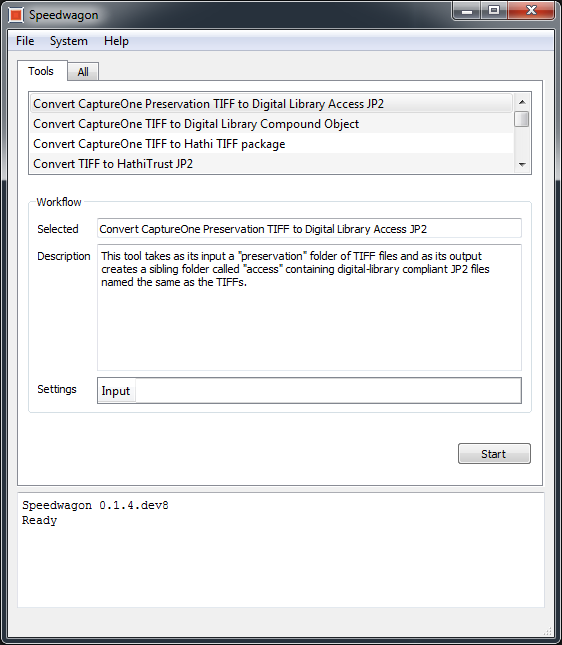

Overview¶
Speedwagon is a file packaging and conversion tool developed by and used at the University of Illinois at Urbana-Champaign Library for preparing digitized books for ingest into digital collections platforms like the HathiTrust Digital Library, as well as systems like Medusa for digital preservation and the locally run and managed Digital Collections. Speedwagon is used to expedite the packaging of locally and vendor based digitized content. It automates and streamlines quality assurance processes to ensure package completeness and facilitate submission. Many of the tools in Speedwagon may be useful to other institutions, but some of them are specific to University of Illinois’ digitization workflows.
This guide demonstrates how the U of I utilizes Speedwagon for packaging locally as well as vendor-produced content, with some pointers on how other institutions may adopt it by creating and customizing a file packaging workflow based on institution-specific needs. A glossary of the tools is included in the guide to help new users identify what tools will work best for them. This guide will outline those workflows and provide visual examples of package and directory structures.